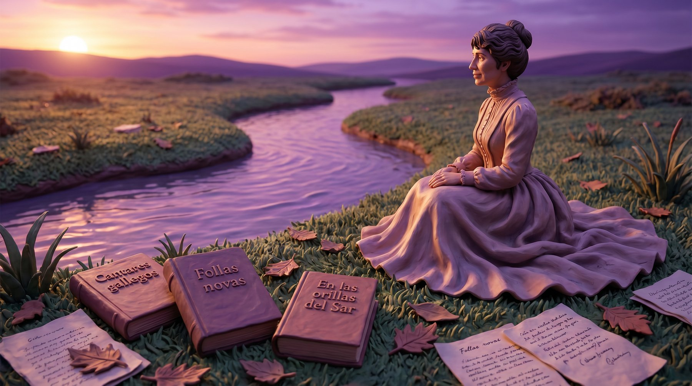
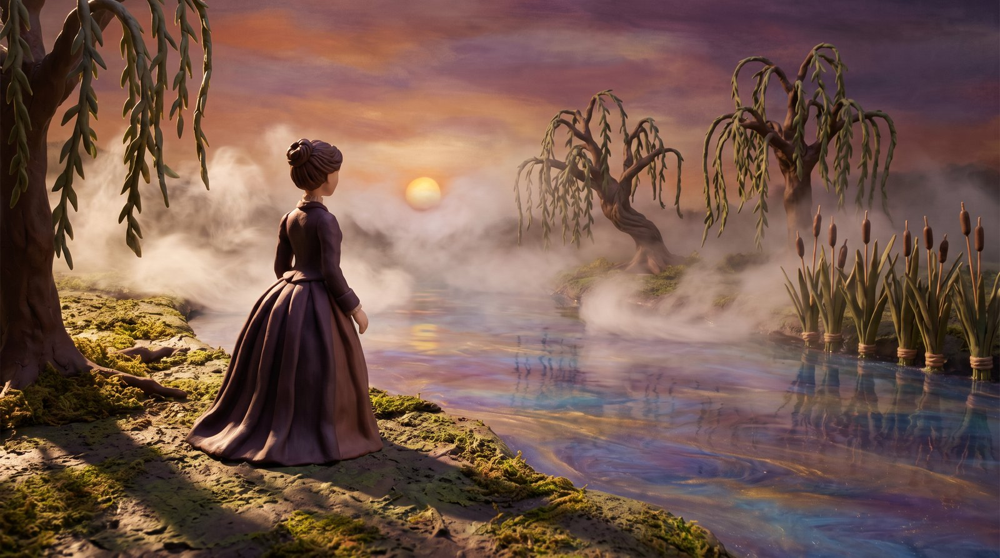
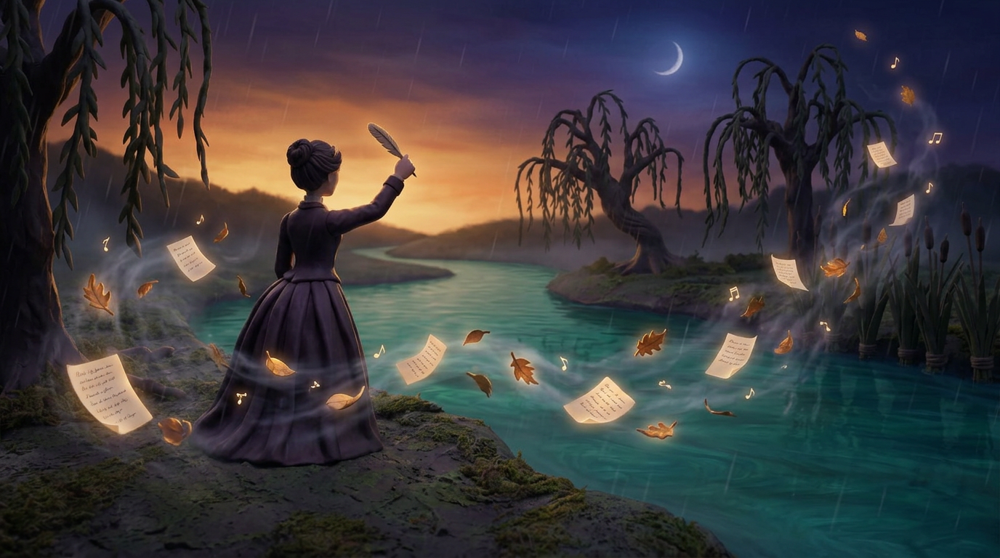
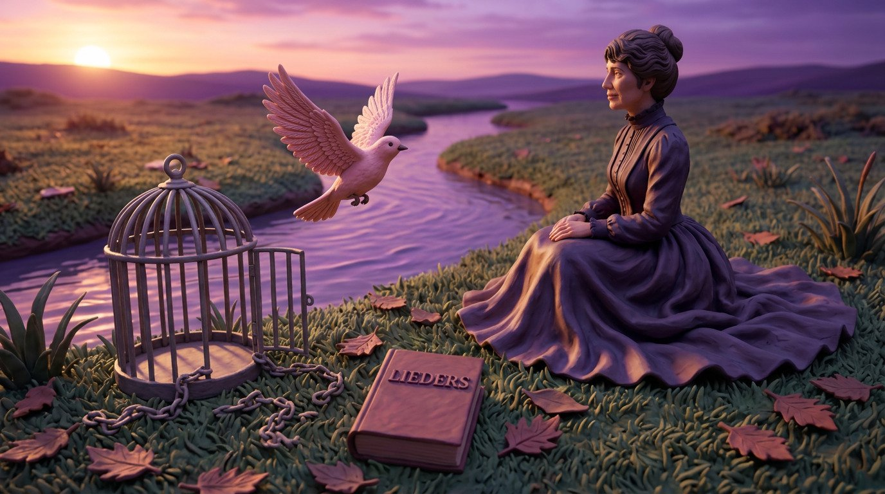
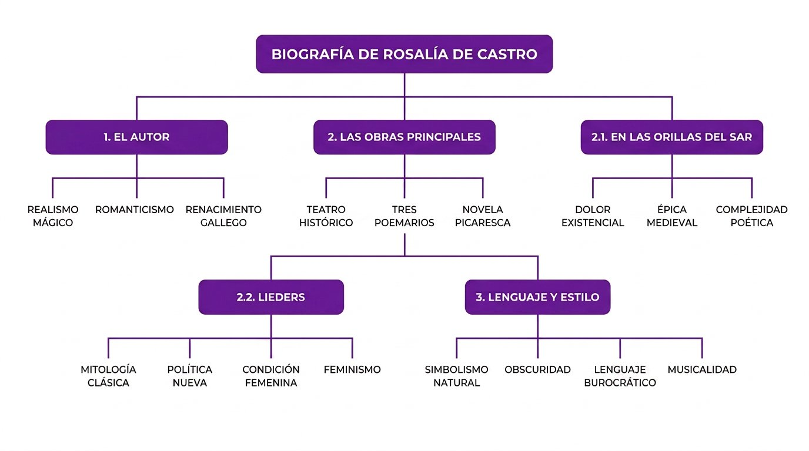
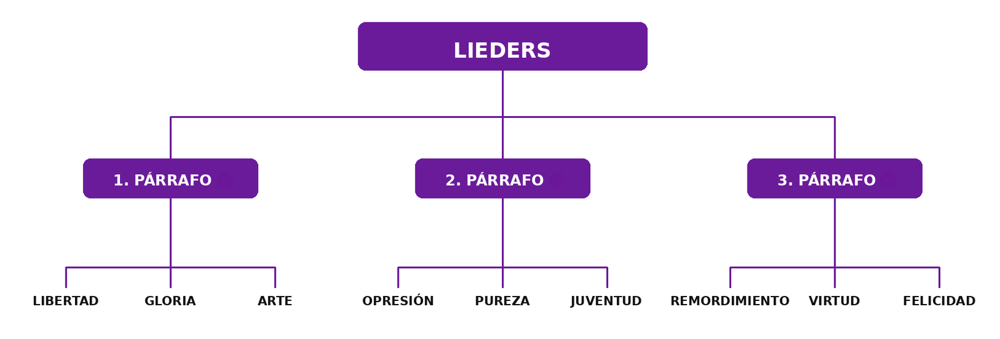
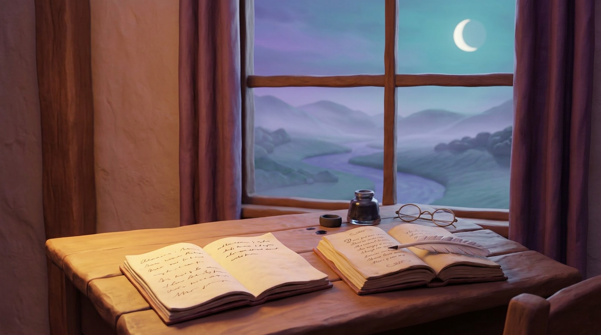

1 · EL AUTOR · LA VIDA DE ROSALÍA

Rosalía de Castro nació en Santiago de Compostela, en Galicia, en 1837 y está considerada una de las figuras esenciales de la literatura española del siglo XIX y la voz más representativa del Rexurdimento gallego.
Durante su juventud conoció de cerca la realidad de Galicia, su lengua, sus paisajes y también las dificultades de las clases populares más pobres. Ese contacto con el mundo gallego marcó su sensibilidad y se convirtió en la base de su escritura.
En 1856 se trasladó a Madrid, donde entró en contacto con el ambiente literario de la época.
Allí publicó su primera novela, titulada La hija del mar, y en 1858 se casó con Manuel Murguía, importante intelectual gallego que siempre apoyó la difusión de su obra. Rosalía murió en 1885 a causa de un cáncer de útero.
LA VIDA EN UNA LÍNEA · LOS AÑOS CLAVE
1837Nace en Santiago de Compostela
1856Se traslada a Madrid
1858Se casa con Murguía · escribe Lieders
1863Publica Cantares gallegos
1880Publica Follas novas
1884Publica En las orillas del Sar
1885Muere en Padrón
2 · LAS OBRAS PRINCIPALES

La producción de Rosalía de Castro incluye novelas, artículos y poemas, pero sus libros más importantes son tres poemarios: Cantares gallegos, Follas novas y, en castellano, En las orillas del Sar.
En el primero, Cantares gallegos, publicado en 1863, Rosalía recoge la voz del pueblo gallego, con sus canciones, sus costumbres y su dolor. La obra reivindica la lengua gallega y dignifica una identidad cultural frecuentemente marginada.
Follas novas, publicado en 1880, presenta un tono más grave e interior. En esta obra poética, la autora profundiza más en el sufrimiento, la soledad y la reflexión sobre la vida.
En las orillas del Sar, publicado en 1884, es aún más intimista y cercano a una sensibilidad moderna.
Junto a estos poemarios, Rosalía escribió novelas como La hija del mar, Flavio, El caballero de las botas azules y El primer loco.
LAS OBRAS EN UNA TABLA
| Obra | Año · Lengua · Género · Tema principal |
|---|
| Cantares gallegos | Año: 1863 Lengua: gallego Género: poemario Tema principal: la voz del pueblo gallego |
| Follas novas | Año: 1880 Lengua: gallego Género: poemario Tema principal: sufrimiento y soledad |
| En las orillas del Sar | Año: 1884 Lengua: castellano Género: poemario Tema principal: intimismo y muerte |
| Lieders | Año: 1858 Lengua: castellano Género: prosa Tema principal: la condición femenina |
| La hija del mar · Flavio · El caballero de las botas azules · El primer loco | Año: — Lengua: castellano Género: novelas Tema principal: narrativa |
3 · EN LAS ORILLAS DEL SAR

El poemario En las orillas del Sar fue publicado en 1884 en castellano y suele considerarse la obra más importante de Rosalía de Castro. En este libro, la autora muestra una poesía más madura, reflexiva y moderna que en sus obras anteriores.
El título hace referencia al río Sar, un lugar muy ligado a su vida y convertido también en símbolo de su mundo interior.
En esta obra poética aparecen algunos de los temas más importantes de Rosalía: el paso del tiempo, la soledad, la pérdida de las ilusiones, la fragilidad humana y la cercanía de la muerte.
Además, la naturaleza desempeña un papel fundamental: el río, la niebla, la tarde y las sombras reflejan los sentimientos de la poeta y expresan melancolía e incertidumbre. Por eso, este poemario tiene un tono muy meditativo e íntimo.
Su lenguaje parece sencillo, pero transmite muchas emociones e ideas.
SÍMBOLOS Y SENTIMIENTOS
| Símbolo | Sentimiento que expresa |
|---|
| el río | el mundo interior, la vida que pasa |
| la niebla | la incertidumbre |
| la tarde | la melancolía |
| las sombras | la tristeza y la cercanía de la muerte |
5 · LENGUAJE Y ESTILO

La escritura de la autora, tanto en prosa como en verso, se caracteriza por su musicalidad, su naturalidad expresiva y el uso frecuente de símbolos tomados de la naturaleza.
Elementos como el mar, el río, la noche, el viento o la lluvia aparecen a menudo en sus obras y no solo describen paisajes, sino que también expresan sentimientos de tristeza, soledad, nostalgia o desarraigo.
Su lenguaje parece sencillo y espontáneo, pero en realidad encierra una profunda carga simbólica y afectiva. En En las orillas del Sar, el lenguaje se vuelve más íntimo, reflexivo y melancólico.
Predominan un tono sombrío y una poesía que transmite inquietud interior, cansancio y dolor existencial. En esta obra, Rosalía utiliza un estilo más maduro, con imágenes sugerentes y símbolos naturales.
También hay muchas figuras retóricas, como las anáforas, los paralelismos y las preguntas retóricas, que aportan ritmo, musicalidad y fuerza expresiva, además de reforzar las ideas esenciales de sus textos.
En Lieders, en cambio, el lenguaje es más directo, firme y reivindicativo. La autora expresa con intensidad su defensa de la libertad individual y su rechazo de las imposiciones sociales que limitan a la mujer.
LAS FIGURAS RETÓRICAS EN UNA TABLA
| Figura | Qué es · Ejemplo de Lieders |
|---|
| Anáfora | Qué es: repetir una palabra al principio de versos o frases Ejemplo de Lieders: “Libre es mi corazón, libre mi alma, y libre mi pensamiento” |
| Paralelismo | Qué es: repetir la misma estructura sintáctica Ejemplo de Lieders: “como los pájaros, como las brisas; como los árboles…” |
| Pregunta retórica | Qué es: una pregunta que no espera respuesta Ejemplo de Lieders: “¿Por qué siendo tan pura…?” |
Texto principalmente reelaborado a partir de: Mayol, Sara – Portolano, Titti (et al.). TFA Español. Manual para las pruebas escritas y orales, Nápoles: Edises, 2014, p. 318.
6 · LOS TEXTOS · LEER Y ANALIZAR

LIEDERS · EL TEXTO COMPLETO
El texto está dividido en tres párrafos (mira los círculos numerados). Escúchalo con atención: cada párrafo contiene las palabras clave del mapa conceptual.
¡Oh, no quiero ceñirme a las reglas del arte! Mis pensamientos son vagabundos, mi imaginación errante y mi alma sólo se satisface de impresiones. Jamás ha dominado en mi alma la esperanza de la gloria, ni he soñado nunca con laureles que oprimiesen mi frente.
Sólo cantos de independencia y libertad han balbucido mis labios, aunque alrededor hubiese sentido, desde la cuna ya, el ruido de las cadenas que debían aprisionarme para siempre, porque el patrimonio de la mujer son los grillos de la esclavitud.
Yo, sin embargo, soy libre, libre como los pájaros, como las brisas; como los árboles en el desierto y el pirata en la mar.
Libre es mi corazón, libre mi alma, y libre mi pensamiento, que se alza hasta el cielo y desciende hasta la tierra, soberbio como el Luzbel y dulce como una esperanza.
Cuando los señores de la tierra me amenazan con una mirada, o quieren marcar mi frente con una mancha de oprobio, yo me río como ellos se ríen y hago, en apariencia, mi iniquidad más grande que su iniquidad.
En el fondo, no obstante, mi corazón es bueno; pero no acato los mandatos de mis iguales y creo que su hechura es igual a mi hechura, y que su carne es igual a mi carne. Yo soy libre.
Nada puede proteger la marcha de mis pensamientos, y ellos son la ley que rige mi destino.
¡Oh mujer! ¿Por qué siendo tan pura vienen a proyectarse sobre los blancos rayos que despide tu frente las impías sombras de los vicios de la tierra?
¿Por qué los hombres derraman sobre ti la inmundicia de sus excesos, despreciando y aborreciendo después en tu moribundo cansancio lo horrible de sus mismos desórdenes y de sus calenturientos delirios?
Todo lo que viene a formarse de sombrío y macilento en tu mirada después del primer destello de tu juventud inocente, todo lo que viene a manchar de cieno los blancos ropajes con que te vistieron las primeras alboradas de tu infancia,
y a extinguir tus olorosas esencias y borrar las imágenes de la virtud en tu pensamiento, todo te lo transmiten ellos todo..., y, sin embargo, te desprecian.
Los remordimientos son la herencia de las mujeres débiles. Ellos corroen su existencia con el recuerdo de unos placeres que hoy compraron a costa de su felicidad y que mañana pesarán sobre su alma como soplo candente.
Espectros dormidos que descansan impasibles en el regazo que se dispone a recibir otro objeto que el que ellos nos presentan, y abrazos que reciben otros abrazos que hemos jurado no admitir jamás.
Dolores punzantes y desgarradores por lo pasado, arrepentimientos vanos, enmiendas de un instante y reproducciones eternas en la culpa, y un deseo de virtud para lo futuro,
un nombre honrado y sin mancillar que poder entregar al hombre que nos pide sinceramente una existencia desnuda de riquezas, más pródiga en bondades y sensaciones vírgenes.
He aquí las luchas precedidas siempre por los remordimientos que velan nuestro sueño, nuestras esperanzas, nuestras ambiciones. ¡Y todo esto por una debilidad!
Texto extraído de: Rosalía de Castro. Obra completa. Padrón: Fundación Rosalía de Castro, 1996, p. 491-492. Este artículo se publicó por primera vez en Álbum del Miño (Vigo, 1858).
NO VA SOLO EL QUE LLORA · EL POEMA
No va solo el que llora
No va solo el que llora.
No os sequéis, por piedad, lágrimas mías;
Basta un pesar al alma,
Jamás, jamás le bastará una dicha.
Juguete del destino, arista humilde,
Rodé triste y perdida;
Pero conmigo lo llevaba todo:
Llevaba mi dolor por compañía.
7 · ACTIVIDAD 1 · PALABRAS CLAVE
➜ Abre la aplicación en tu tableta con el código que te da el profesor e inicia la sesión con tu nombre y apellidos. En la pantalla verás el mapa conceptual 1, que trata sobre la vida de la escritora, Rosalía de Castro.
El docente irá activando las preguntas una por una.
➜ Escucha el texto con atención. En cada número del mapa, elige la palabra correcta entre las opciones que aparecen en los nodos. Todos los apartados admiten una única solución, mientras que las preguntas 4 y 5 admiten dos soluciones.
Por último, copia el mapa completo en tu cuaderno y deja que lo vea el docente.
➜ Después, el profesor activará el mapa conceptual 2 sobre el ensayo Lieders de Rosalía de Castro. Este texto tiene tres párrafos.
Mientras escuchas cada párrafo, selecciona en tu móvil la palabra clave correcta entre las opciones del mapa, igual que has hecho en el ejercicio anterior. Al final, dibuja el mapa conceptual correcto en tu cuaderno.
➜ Opcional. Finalmente, relaciona el texto Lieders de la autora gallega con Educación para la Ciudadanía mediante una actividad adicional en clase diseñada por el docente.
MAPA CONCEPTUAL 1 · LA VIDA DE LA ESCRITORA

MAPA CONCEPTUAL 2 · EL ENSAYO LIEDERS

8 · ACTIVIDAD 2 · LABORATORIO AUMENTADO
Esta actividad os permitirá explorar el arte poético de Rosalía de Castro a través de la realidad aumentada. Trabajaréis en grupos para crear una composición visual que exprese mejor el sentido del poema en un espacio real.
A continuación, encontraréis todos los pasos necesarios para completar la actividad.
PASO 1 ESCANEAD EL CÓDIGO QR. Primero, usad tabletas u otros dispositivos móviles para escanear el código QR que tenéis aquí abajo. Se abrirá el poema de Rosalía de Castro en tres dimensiones.
PASO 2 LEED EL POEMA CON ATENCIÓN. Antes de activar la realidad aumentada, leed la poesía en 3D que aparece en la pantalla inicial y que podéis ampliar para leerla mejor.
Esto sirve para reflexionar sobre su sentido, las emociones que transmite y las imágenes que evoca. Esta lectura os ayudará a elegir el lugar más adecuado para colocar el poema.
PASO 3 ACTIVAD LA REALIDAD AUMENTADA. Pulsad el botón «Tap here to place in your space».
Apuntad vuestro dispositivo móvil hacia el suelo y esperad unos segundos: el poema aparecerá flotando en el espacio a vuestro alrededor, como si estuviera escrito en el aire.
PASO 4 ENCONTRAD UNA LOCALIZACIÓN. Buscad un lugar significativo dentro del aula o en el patio del instituto. El espacio debe ayudar a expresar las ideas y emociones del poema. Pensad: ¿qué rincón, qué pared dialoga mejor con los versos de Rosalía de Castro?
PASO 5 HACED UNA CAPTURA DE PANTALLA. Situad el poema en el lugar elegido y haced allí una captura de pantalla. Si queréis, podéis hacer hasta tres capturas eligiendo los encuadres que mejor representen vuestro trabajo.
Cada imagen debe ayudar a comprender y sentir mejor la poesía. Subid las capturas a la aplicación en el apartado Elaborado visual.
PASO 6 ESCRIBID LA EXPLICACIÓN. Redactad un texto en el que expliquéis:
por qué elegisteis ese lugar concreto, qué relación existe entre el espacio y el poema y, finalmente, qué efecto queríais conseguir con vuestra captura de pantalla. Escribid esta explicación en el apartado Explicación de la imagen.
PASO 7 GRABAD LA LECTURA EN ESPAÑOL. Grabad un archivo de audio con vuestra lectura del poema. Todos los integrantes debéis participar en la lectura expresiva. Repartíos las estrofas y cuidad la pronunciación y la entonación.
Cuando terminéis, subid el archivo en el apartado Lectura en español.
PASO 8 GRABAD LA EXPLICACIÓN ORAL. Grabad un segundo archivo de audio en el que expliquéis oralmente vuestras capturas de pantalla. Todos los integrantes debéis leer al menos una frase de la explicación.
Subid esta grabación en el apartado Explicación en audio de las razones de la foto.
9 · ACTIVIDAD 3 · ANÁLISIS TEXTUAL

➜ Vuelve a leer el poema de Rosalía de Castro No va solo el que llora y, a continuación, escribe en tu cuaderno el análisis textual del poema según el método de Fernando Lázaro Carreter. El texto debe tener una extensión aproximada de 300 palabras.
OBJETIVO · CHECKLIST PARA EL ANÁLISIS
☐ He escrito el tema del poema en una frase
☐ He dividido el poema en partes y las he comentado
☐ He reconocido al menos una figura retórica
☐ He explicado los símbolos de la naturaleza
☐ Mi texto tiene unas 300 palabras